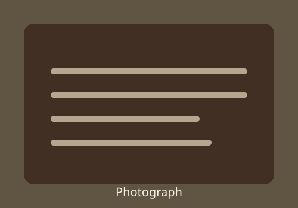
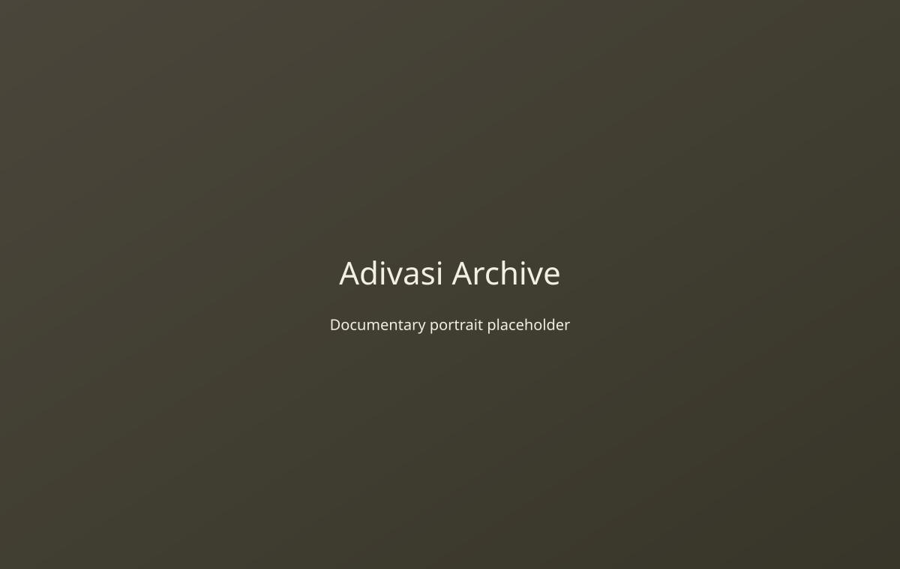
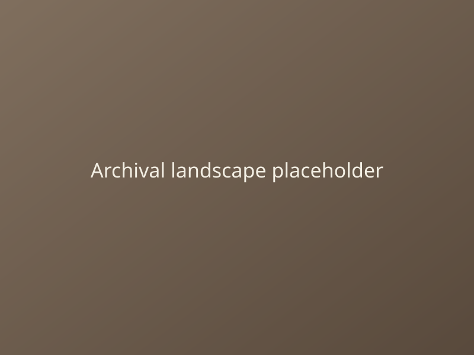
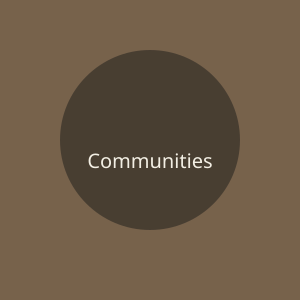
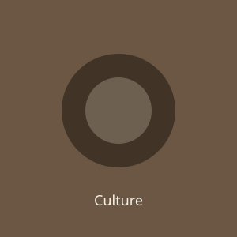

DIGITAL RESEARCH & CULTURAL ARCHIVE
Adivasi Archive
An evolving archive documenting the communities, histories, cultures, photographs, documents and knowledge of Adivasi communities across India.
ABOUT THE ARCHIVE
A Little About the Archive
Adivasi Archive is a growing digital collection created to document and make accessible the histories, cultures, photographs, documents and stories of Adivasi communities across India.
It is built to preserve material and make it available for future generations, offering a quiet place for research and reflection.
Read more
Explore the Archive
Explore communities and the records connected to their histories, cultures and lives.

Communities
Profiles, regions, cultural practices and community stories.
History
Chronicles of resistance, migration and tradition across India.
Research
Studies, field notes and carefully sourced references.

Culture & Knowledge
Language, crafts, customs and the living knowledge of communities.
From the Archive